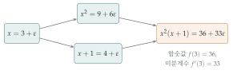

STEP II 1992, 문제 4
계속 읽기 전에 문제를 먼저 읽어 보자. 문제는 STEP Support Programme의 문제 데이터베이스에 있다: step.maths.org/questions/92-s2-q4
도입
미분(differentiation)이란 무엇인가? 학교에서는 미분을 극한(limit) \(\lim_{h \to 0}\frac{f(x+h) - f(x)}{h}\)로 정의하고, 그다음 여러 규칙을 배운다. 합의 도함수(derivative)는 도함수의 합이라는 규칙, 곱의 미분법(product rule) 등이다. 이 문제는 이 순서를 뒤집는다. 극한은 완전히 잊어버리자. 어떤 연산에 대해 아는 것이라고는 그 연산이 합의 법칙, 곱의 법칙, 상수에 관한 법칙을 따르고 \(x\)를 \(1\)로 보낸다는 사실뿐이라고 하자. 그러면 이 문제가 보여 주듯이, 적어도 다항식(polynomial)에서는 그 연산이 반드시 미분이어야 한다.
이것이 미적분을 바라보는 대수학자의 관점이다. 연산은 공식이 아니라 그 연산이 따르는 규칙으로 특징지어진다. 곱의 법칙을 따르는 연산을 도분(derivation)이라고 하며, 도분은 대수학, 기하학, 물리학 곳곳에 등장한다. 놀랍게도 같은 아이디어가 현대의 기계 학습 시스템을 훈련시키는 소프트웨어 안에서도 작동하고 있다.
시작하기 전에
규칙 (i)은 곱의 법칙이다. 곱의 법칙이 어떻게 상수에 대해 무언가를 알려 줄 수 있을까? (상수를 곱으로 생각해 보자.)
수 \(1\)은 \(1 \times 1\)과 같다. \(1 \times 1\)에 곱의 법칙을 적용하면 \(\lozenge 1\)을 자기 자신과 연결하는 관계식이 나오고, 이 관계식 때문에 그 값은 0일 수밖에 없다. 일반적으로 이런 공리(axiom)를 다룰 때의 요령은 영리하게 고른 간단한 입력에 공리를 적용하는 것이다.
차근차근 풀기
단계 1 상수
\(\mathrm{f} = \mathrm{g} = 1\)로 놓고 규칙 (i)을 적용하라. 그다음 다른 상수에 대해서는 규칙 (iv)를 사용하라.
\(\lozenge 1 = \lozenge(1 \cdot 1) = 1 \cdot \lozenge 1 + 1 \cdot \lozenge 1 = 2\lozenge 1\)이므로 \(\lozenge 1 = 0\)이다. 임의의 상수 \(\lambda\)에 대해 규칙 (iv)에 의해 \(\lozenge\lambda = \lozenge(\lambda \cdot 1) = \lambda\lozenge 1 = 0\)이다.■
단계 2 거듭제곱
규칙 (iii)을 사용하면 \(\lozenge x^2 = \lozenge(x \cdot x) = x\lozenge x + x\lozenge x = 2x\)이다. 그러면 \[\lozenge x^3 = \lozenge(x^2 \cdot x) = x\lozenge x^2 + x^2\lozenge x = x \cdot 2x + x^2 = 3x^2.\]
모든 양의 정수 \(n\)에 대해 \(\lozenge x^n = nx^{n-1}\)임을 수학적 귀납법(induction)으로 증명하라.
\(n = 1\)인 경우는 규칙 (iii)이다. \(\lozenge x^n = nx^{n-1}\)이면 \[\lozenge x^{n+1} = \lozenge(x^n \cdot x) = x\lozenge x^n + x^n\lozenge x = x \cdot nx^{n-1} + x^n = (n + 1)x^n. \qed\]
단계 3 모든 다항식
일반적인 다항식은 \(\mathrm{h}(x) = a_0 + a_1x + \cdots + a_mx^m\)이다. 규칙 (ii)를 (반복해서) 적용하고 규칙 (iv)를 적용하면 \[\begin{aligned} \lozenge\mathrm{h}(x) &= \lozenge a_0 + a_1\lozenge x + a_2\lozenge x^2 + \cdots + a_m\lozenge x^m \\ &= a_1 + 2a_2x + \cdots + ma_mx^{m-1} = \mathrm{h}'(x). \qed \end{aligned}\]
돌아보기
공리가 연산을 결정한다. 극한은 전혀 언급하지 않은 네 개의 규칙만으로 다항식 위에서 \(\lozenge\)가 완전히 결정되었다.
생성원(generators). 모든 다항식은 상수와 \(x\)로부터 덧셈과 곱셈을 써서 만들어진다. 기본 재료에 대해 \(\lozenge\)가 무엇을 하는지, 그리고 만드는 연산과 어떻게 어우러지는지를 알면 모든 곳에서 그 값이 결정된다.
구성을 따라가는 귀납법. 증명은 다항식이 만들어지는 방식을 그대로 따라갔다. 먼저 곱셈을 반복해 거듭제곱을 다루고, 그다음 합을 다루었다.
숨은 수학
어떤 대수적 체계 위의 연산 \(D\)가 덧셈을 보존하고 곱의 법칙 \(D(fg) = fD(g) + gD(f)\)를 만족하면, 이를 도분이라고 한다. 이 문제는 다항식 위에서 상수를 0으로 보내는 도분이 \(D(x)\)에 의해 완전히 결정된다는 것을 보여 준다. 실제로 \(D(h) = h'(x)\,D(x)\)이므로, 남은 자유는 다항식 \(D(x)\)를 고르는 것뿐이다. 규칙 (iii)은 \(D(x) = 1\)로 정한다. 도분은 수학 전반에 나타난다. 기하학에서는 곡면 위의 벡터장(vector field)을 그 곡면 위의 함수들에 작용하는 도분으로 정의할 수 있다(벡터장은 함수를 그 장의 방향으로 미분한다). 대수학에서는 어떤 구조의 도분이 그 구조의 “무한소 대칭”을 측정한다. 물리학에서는 양자역학의 교환자(commutator) \([A, B] = AB - BA\)가 각 변수에 대해 도분이다.
극한 없는 미적분
대수적인 도함수는 극한이 전혀 의미가 없는 상황에서도 작동한다. 소수 \(p\)를 법으로 하는 산술과 같은 유한체(finite field) 위에서는 극한이 없지만, 다항식의 형식적 도함수(formal derivative)는 같은 규칙으로 정의되며 여전히 중근(repeated root)을 찾아낸다. 다항식 \(f\)가 중근을 가질 필요충분조건은 \(f\)와 \(f'\)이 공통인수를 가지는 것이다. 예를 들어 \(p \nmid n\)일 때 \(x^n - 1\)이 중근을 갖지 않음을 이런 방법으로 보이며, 이 사실은 6.1 절의 원분다항식(cyclotomic polynomial)을 유한체 위에서 정의하는 데 필요하다. 같은 아이디어가 부호 이론(coding theory)과 암호학(cryptography)에서도 쓰인다.
자동 미분
현대적인 응용을 하나 살펴보자. \(\varepsilon^2 = 0\)이지만 \(\varepsilon \neq 0\)인 수 \(\varepsilon\)을 새로 만들어 내고, 이원수(dual numbers) \(a + b\varepsilon\)으로 산술을 한다. 그러면 \((a + b\varepsilon)(c + d\varepsilon) = ac + (ad + bc)\varepsilon\)이다. 즉 \(\varepsilon\) 부분은 정확히 곱의 법칙을 따른다. 따라서 임의의 다항식에 대해 \[f(x + \varepsilon) = f(x) + f'(x)\,\varepsilon,\] 이고, \(f\)에 이원수 \(x + \varepsilon\)을 대입하여 계산하면 함숫값과 미분계수가 동시에, 정확하게 계산된다. 극한도 필요 없고, 작은 차이에서 생기는 반올림 오차도 없다(그림 6.5.1). 이를 전진 모드 자동 미분(forward-mode automatic differentiation)이라고 한다. 그 사촌인 후진 모드는 수십억 개의 매개변수를 가진 신경망(neural network)을 훈련시키는 데 쓰이는 알고리즘(역전파(backpropagation))이다. 이런 시스템이 학습할 때마다, 시스템은 곱의 법칙과 연쇄법칙(chain rule)을 도분으로서 한 단계씩 적용하고 있는 것이다.

사고 기술
연산을 그것이 따르는 규칙으로 기술한 다음, 그 규칙이 연산을 유일하게 결정함을 보여라.
이것이 대학 대수학의 중심인 공리적 방법(axiomatic method)이다. 이 방법의 힘은 공리로부터 증명한 모든 것이 그 공리를 만족하는 모든 연산에 적용된다는 데 있다. 그것이 다항식의 미분이든, 곡면 위 함수의 미분이든, 아직 발명되지 않은 무언가이든 마찬가지이다.
더 도전하기
다른 도분. \(\lozenge\)가 규칙 (i), (ii), (iv)를 만족하되, \(1\) 대신 \(\lozenge x = x\)라고 하자. \(\lozenge\mathrm{h}(x) = x\,\mathrm{h}'(x)\)임을 보여라. \(\lozenge\)는 \(x^n\)을 무엇으로 보내는가?
몫의 미분법. 규칙 (i)이 여전히 성립한다고 가정하고 \(\lozenge\)를 유리함수(rational function) \(\mathrm{f}/\mathrm{g}\)로 확장하라. \(\mathrm{g} \cdot \frac{\mathrm{f}}{\mathrm{g}} = \mathrm{f}\)에 규칙 (i)을 적용하여 몫의 미분법(quotient rule)을 유도하라.
중근. \((x - a)^2\)이 다항식 \(\mathrm{f}\)를 나누면 \(x - a\)가 \(\mathrm{f}'\)을 나눔을 보여라. 이를 이용하여 \(x^n - 1\)이 중근을 갖지 않음을 보여라.
이원수. 이원수를 이용하여 \(f(x) = (x^2 + 1)^3\)에 대해 \(f(2)\)와 \(f'(2)\)를 계산하고, 연쇄법칙으로 검산하라.
더 읽을거리
Peter Cameron, Introduction to Algebra (Oxford University Press). 대학 1학년 수준에서 환, 다항식, 체를 다루며 형식적 도함수도 소개한다.
Andreas Griewank & Andrea Walther, Evaluating Derivatives (SIAM). 자동 미분에 관한 표준 참고서이다. 고급 수준.
Michael Nielsen, Neural Networks and Deep Learning (온라인 무료 공개). 2장에서 역전파를 명쾌하게 설명한다.